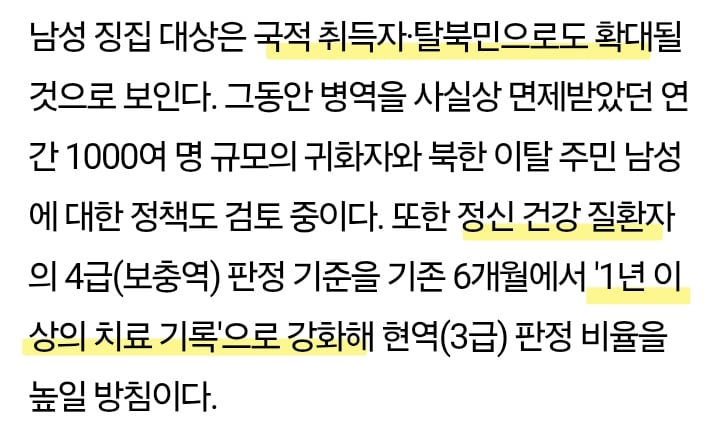
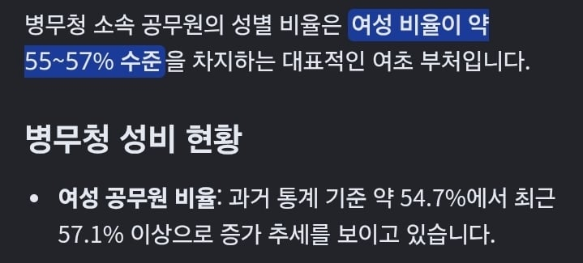

이 병무청장이 병역의무의 느낌을 알까요?
여성징병은 ㄴㄴ하지만 여성 '간부' 비율은 확대 ㅋㅋ
남자라면 귀화자, 탈북민, 정신병자도 징병대상으로 확대 ㅋㅋ

병무청 자체가 여초라서
병역의무 없는 여성 병무청장 앞으로도 나올 예정 ㅋㅋ

이 병무청장이 병역의무의 느낌을 알까요?
여성징병은 ㄴㄴ하지만 여성 '간부' 비율은 확대 ㅋㅋ
남자라면 귀화자, 탈북민, 정신병자도 징병대상으로 확대 ㅋㅋ

병무청 자체가 여초라서
병역의무 없는 여성 병무청장 앞으로도 나올 예정 ㅋㅋ
이러니까 초급간부들 다 탈주하지 ㅋㅋ
이미 남자 직업군인 인식부터 대우까지 싹다 개졷박아서 사람못구하니까
그걸 여자간부로 채워넣는거 같은데
ㅋㅋㅋ 군대도 곧 오또K 경찰꼴 날듯
조졌네 그냥
하 ㅅㅂㄴ마렵네